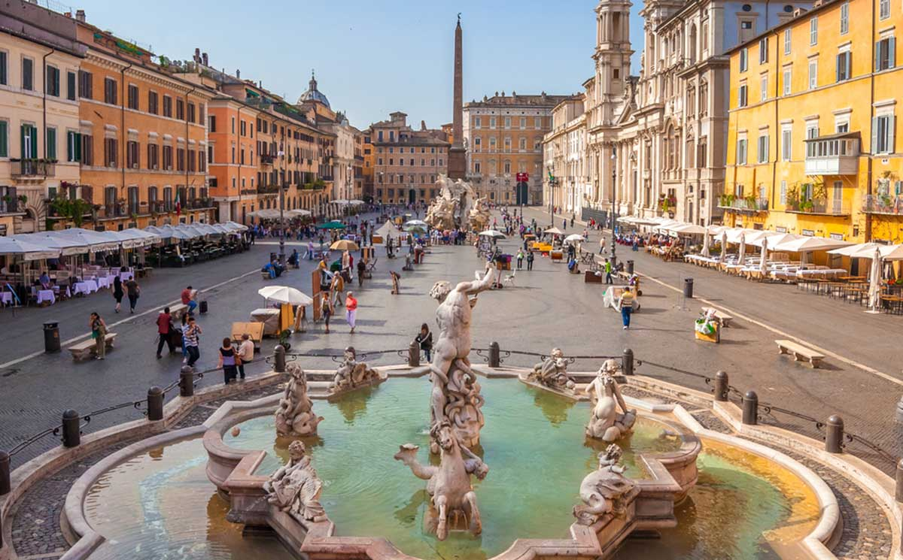
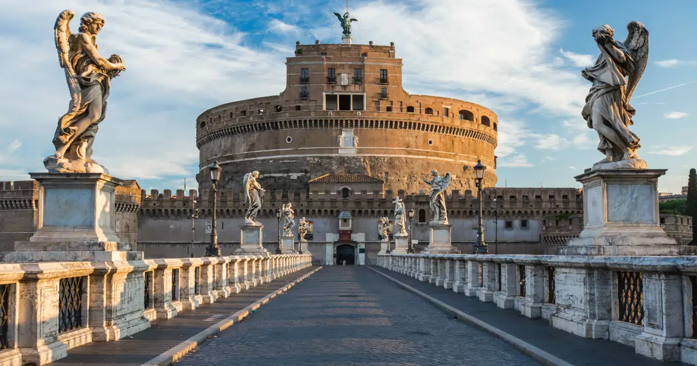
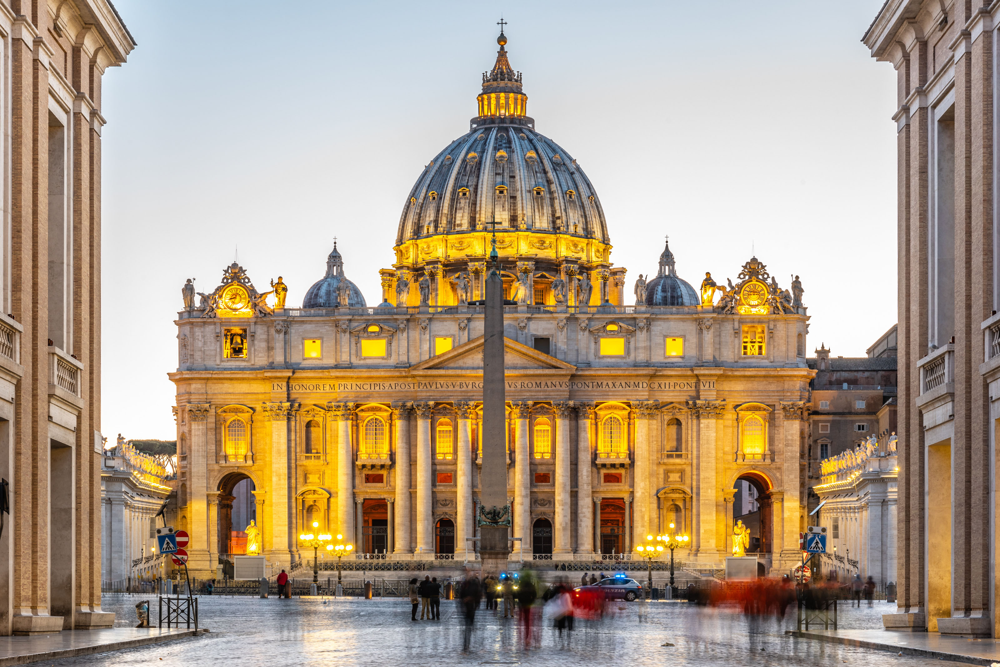
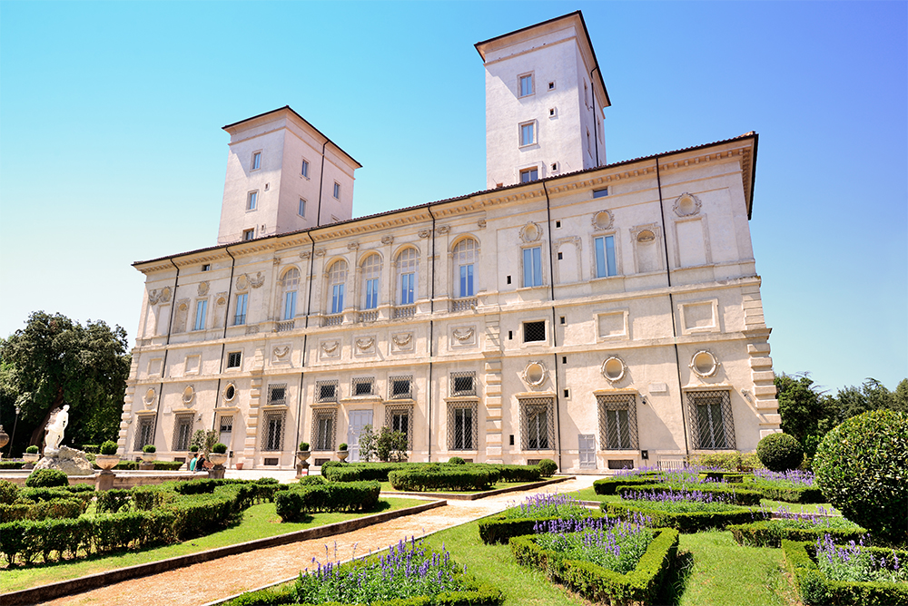
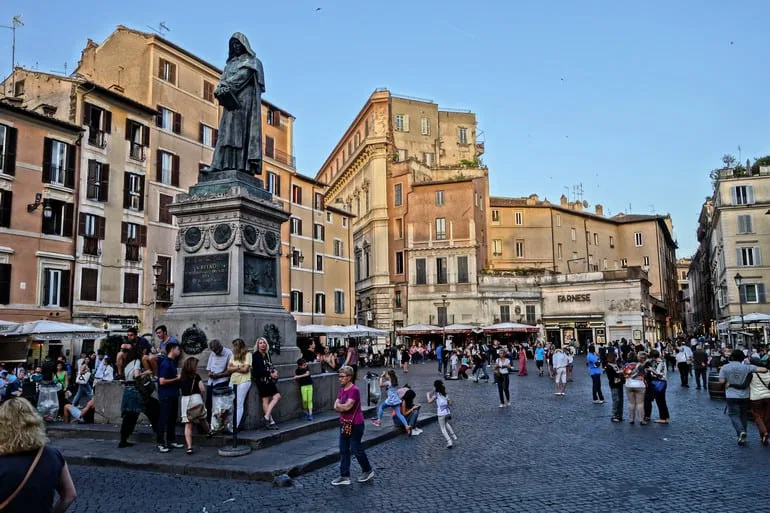
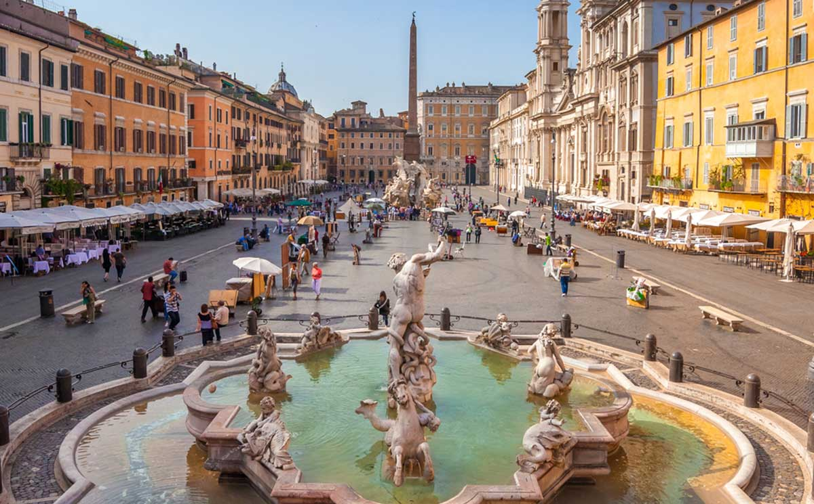
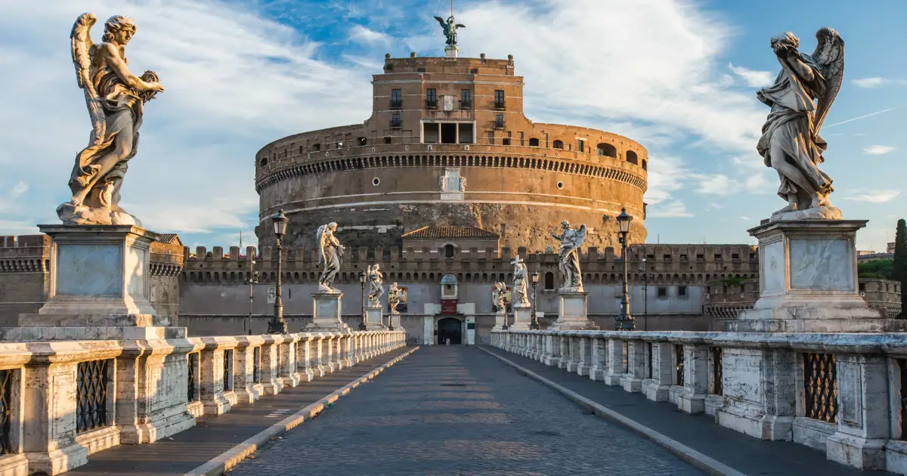
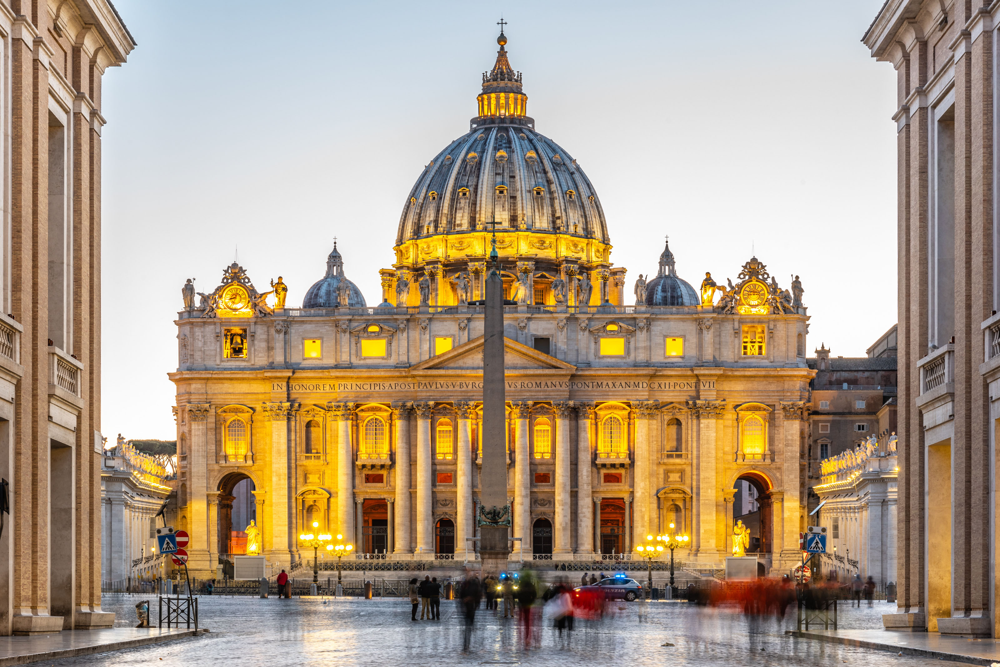
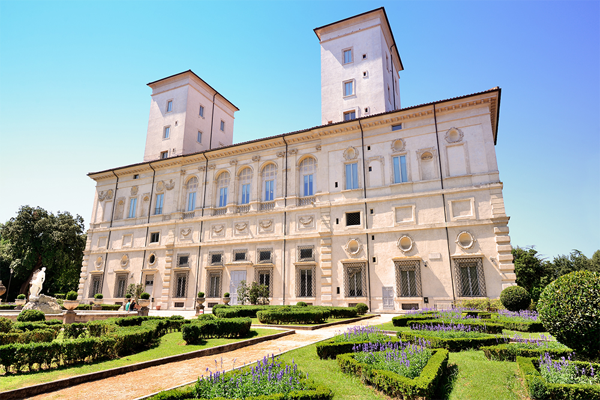
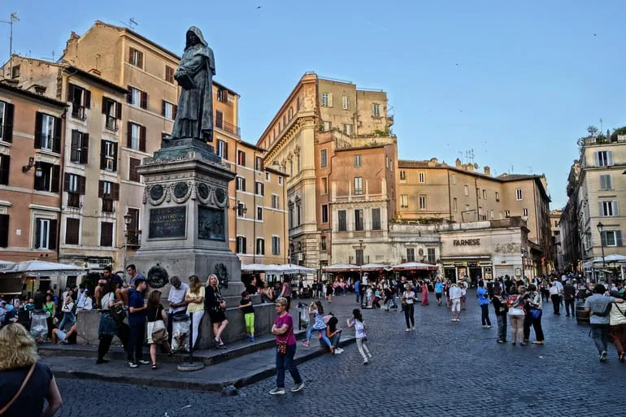

Coliseo

El mayor anfiteatro del Imperio Romano, símbolo de la ciudad.
Ubicación: Piazza del Colosseo
Historia, cultura y pasión eterna
 









El mayor anfiteatro del Imperio Romano, símbolo de la ciudad.
Ubicación: Piazza del Colosseo
Centro espiritual del catolicismo y hogar de la Capilla Sixtina.
Ubicación: Ciudad del Vaticano

La fuente más famosa de Roma, tradición de lanzar una moneda.
Ubicación: Rione Trevi

Templo romano con una cúpula impresionante y milenaria.
Ubicación: Piazza della Rotonda